MediForge User Manual
Plain-language help for everyday clinic work. Last updated June 2026.
1. Login
- Open your clinic’s MediForge website (your administrator gives you the link).
- Enter your username and password.
- Click Login.
You should land on the Dashboard. If not, check your password or ask your clinic administrator.
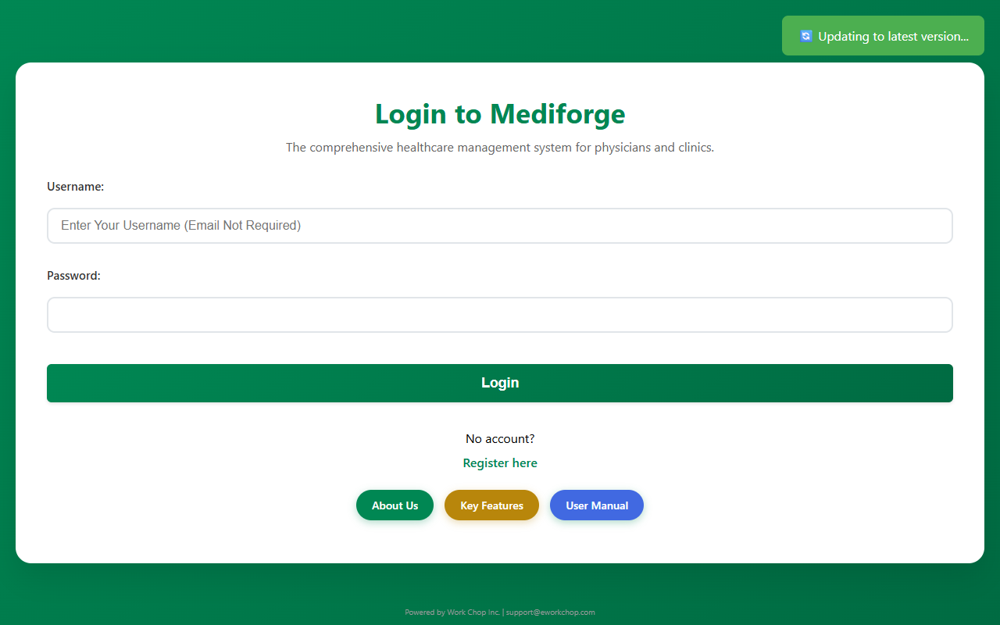
01-login.png or run the capture script.2. Register a clinic (first time or new staff)
Create a new clinic
- From the login page, click Register.
- Choose create a new organization (you will be the first administrator).
- Enter clinic name, Canada address (province, city, postal code), and your personal details.
- Optional: provincial health billing / insurance fields if your clinic uses them.
- Accept the legal agreements and submit.
- Log in with the username and password you chose. You will receive an organization code: share it with staff who need to join.
Join an existing clinic
- Click Register → join an existing organization.
- Enter the organization code from your administrator.
- Fill in your name, role (Doctor, Nurse, Admin, etc.), and password.
- Submit, then log in.
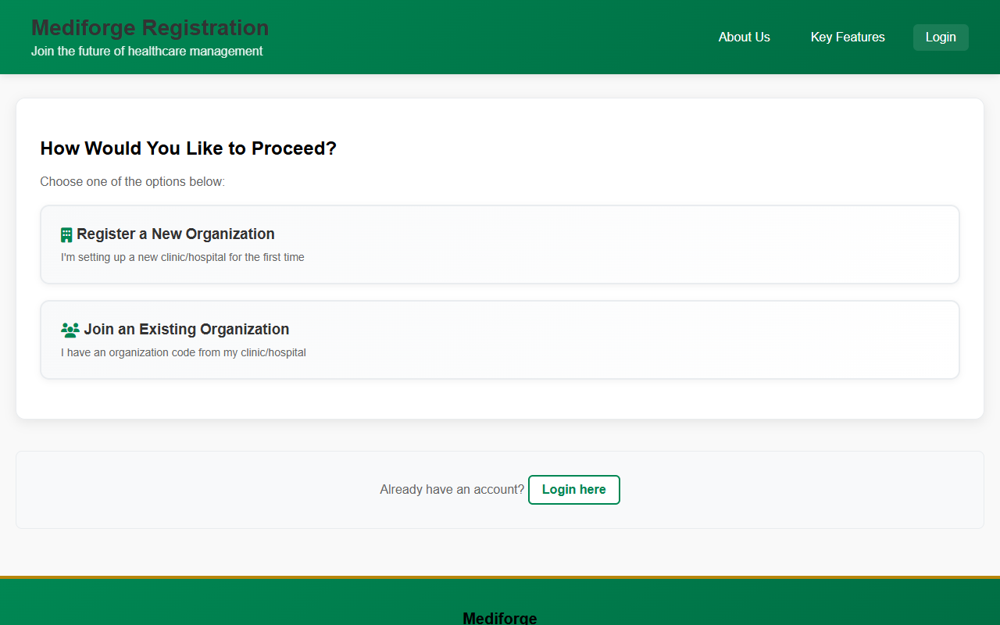
13-register.png3. Your dashboard
After login, the Dashboard is your home. Buttons open patients, appointments, billing, messages, and more. What you see depends on your role.
Diagnosis code setting (administrators)
Under Facility Configuration, use Diagnosis Codes: ICD-10-CA / ICD-11 to choose which diagnosis list your clinic searches. Canadian clinics usually keep ICD-10-CA (default).
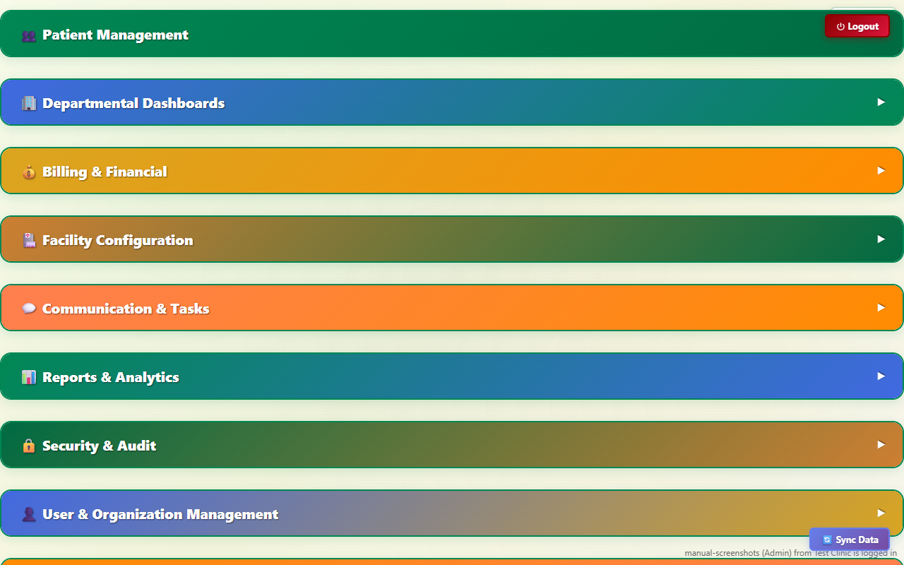
18-icd-settings.png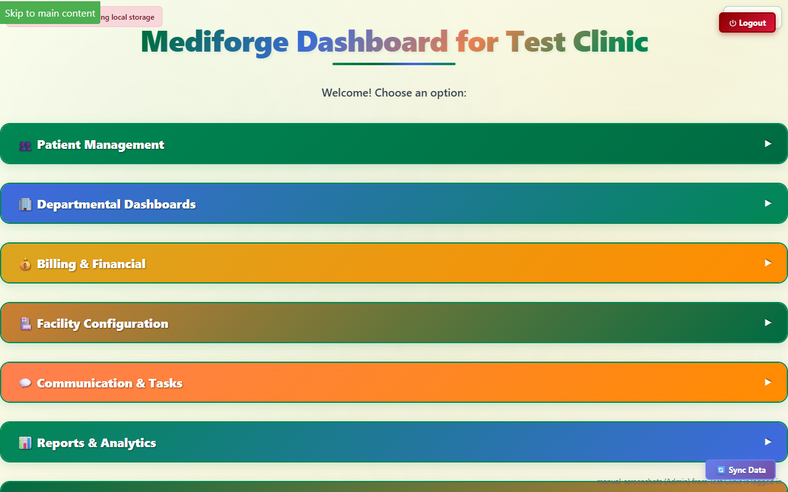
02-dashboard.png4. Patients: find and open a chart
- Click Manage Patients.
- Search by name or ID, or click Add Patient.
- Open a patient to see their chart, visits, and notes.
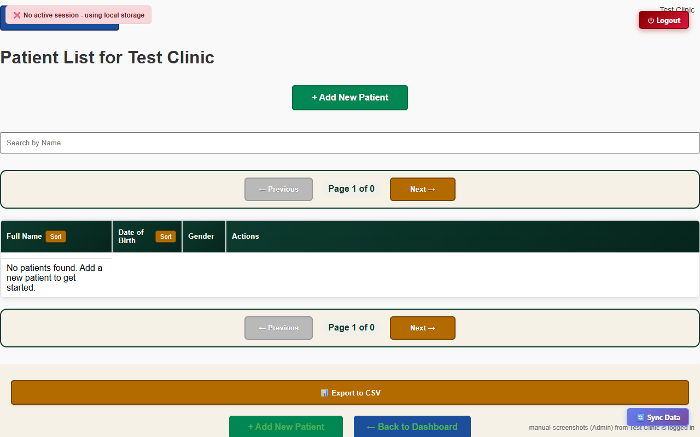
03-patients.png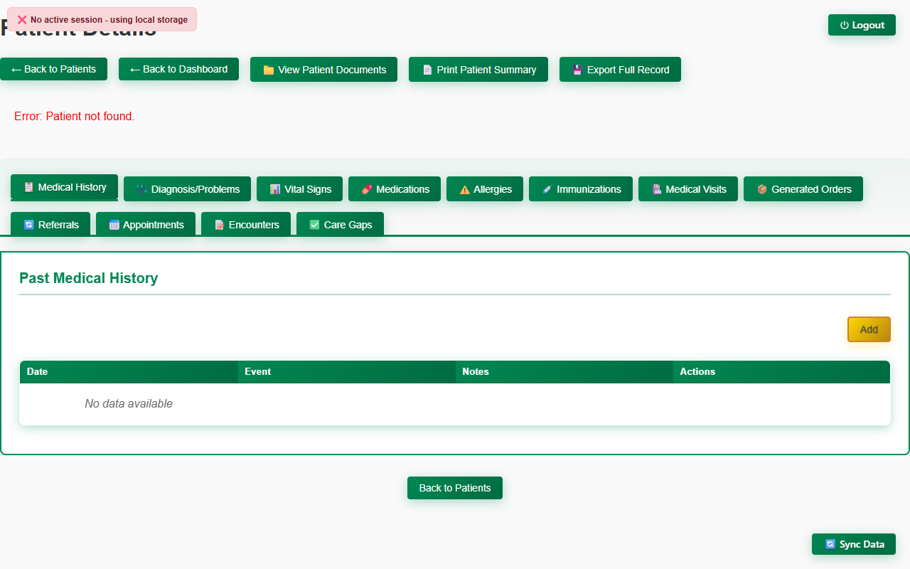
04-patient-details.png5. Add a patient (Canada)
- Go to Manage Patients → Add Patient.
- Fill in name, date of birth, gender, phone, and Canadian address (province, city, postal code).
- Choose Race from the dropdown (required). You may select Declined to Disclose.
- Optional: provincial health card (PHN) and insurance member numbers if your clinic collects them.
- Past medical history: dates: under each date field you may see Estimated date is acceptable. Use your best estimate if the exact day is unknown.
- Diagnosis search: in Past Medical History, type a condition (e.g. diabetes) and pick an ICD-10-CA code from the list, or use a custom entry.
- Medications the patient already takes: search the OTC list, or type a name not listed and click Not in list? Use my typed medication name, then enter dosage.
- Click Save when finished.
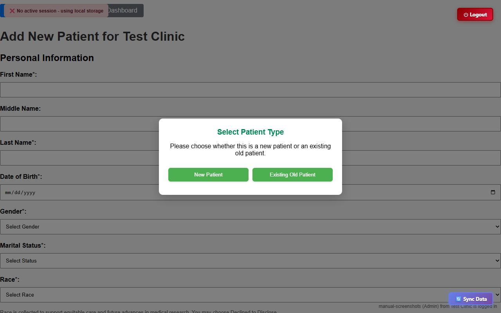
14-add-patient.png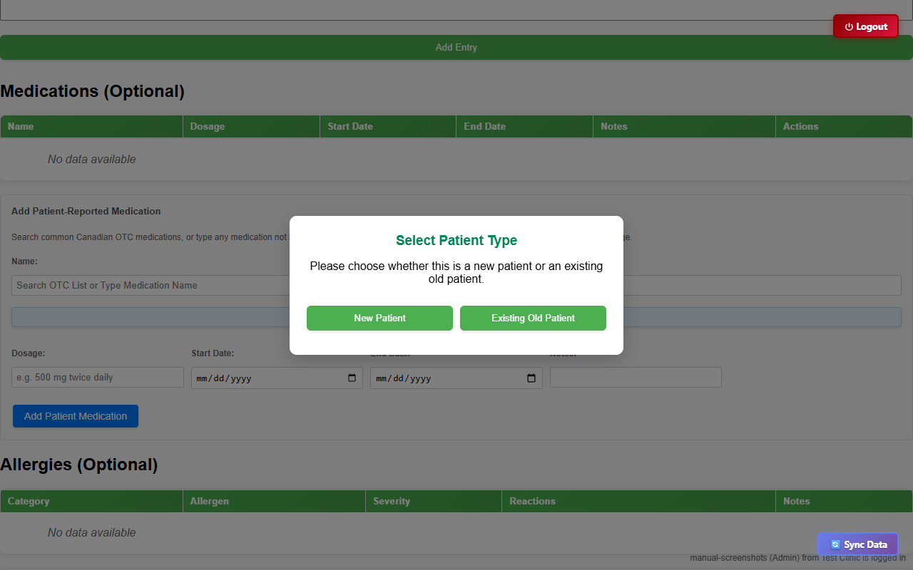
15-manual-medication.png5b. Bulk import patients (CSV or Excel)
Import many patients at once when moving from paper charts or another system.
- Dashboard → Patient Management → Bulk Import Patients (CSV/Excel).
- Download the template, fill rows in Excel, then upload .csv or .xlsx.
- To keep your existing chart numbers, put them in the Patient ID column and leave Keep existing Patient IDs checked.
- Preview the list, then click Import patients. Empty fields can be filled in later under Edit Patient.

21-bulk-patient-import.png6. Patient self-intake (online form)
Patients can fill in their own details before the visit using a link from your clinic.
For staff: share the link
Your administrator provides the intake link (from dashboard or settings). Send it by email or SMS.
For patients: submit the form
- Open the link on a phone or computer.
- Complete name, contact, address, race, medications, and medical history.
- Submit. You do not need a staff login.
For staff: approve submissions
- Dashboard → Review Patient Intake.
- Open a pending submission, check the details, and Approve or reject.
- Approved patients appear in your patient list with address and race saved.
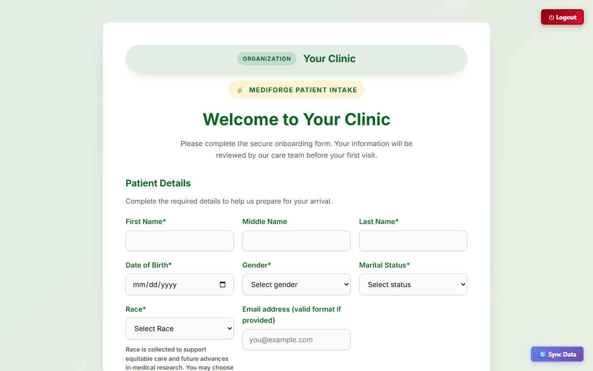
16-patient-intake.png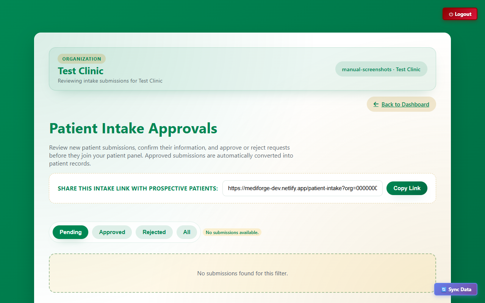
17-intake-approvals.png7. Clinical notes
From a patient, open a clinical note to document the visit (SOAP). Save often. Use Bill Visit on the Medical Visits tab to charge for that visit.
- Open the patient chart → start or open today’s clinical note.
- Fill in Subjective, Vital Signs, Assessment, and Plan tabs as needed.
- Click Save often. If the note is locked, you must unlock it (doctors only) before editing.
Medical history dates
When you add past medical history, immunizations, or similar items, the date field shows Estimated date is acceptable. Use your best estimate if the exact day is unknown.
Lab and imaging orders
From the clinical note, use Order Labs or Order Imaging to send tests to your lab or imaging centre.
- Open Order Labs or Order Imaging from the note.
- Search by test name or pick a category (e.g. X-Ray, Ultrasound, Haematology).
- Check the tests you need. Add an optional ordering note on each row (e.g. right knee, fasting).
- Click Send Out or use bulk send for multiple lab tests in one order.
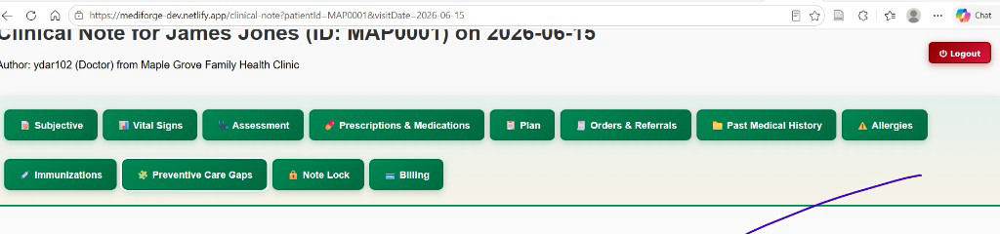
05-clinical-note.png8. Prescriptions
Write and print prescriptions from the patient chart or the prescription screen. Canadian clinics search the Health Canada drug list (DIN) when you type a medication name.
- Open a patient → Prescription (or open an existing Rx from the chart).
- Search diagnosis with ICD-10-CA (type at least 2 letters, e.g. diabetes).
- Add each medication: type a drug name (e.g. metformin) and pick a result from the list. Strength and form come from the formulary.
- Enter dose, route, frequency, and duration. Click Save Prescription: diagnosis and medications sync to the patient chart.
- Optional: Send to Pharmacy queues the Rx for your in-clinic pharmacy dashboard (when pharmacy staff use MediForge).
- Print, download, or email the signed prescription as your clinic policy requires.
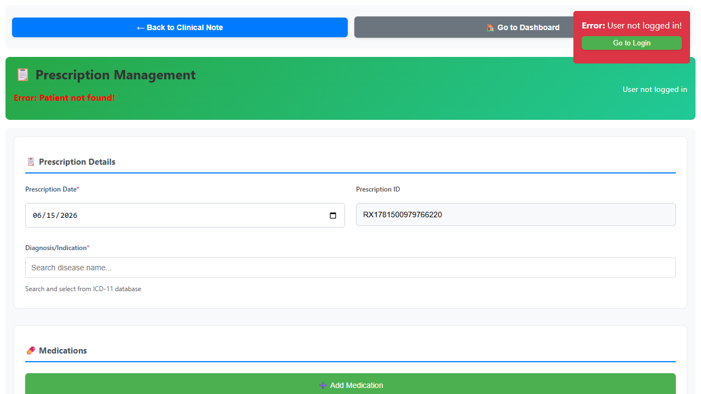
19-prescription.png9. Preventive care gaps
MediForge lists screening and immunization items the patient may still need (based on age, sex, and chart data). Review them during a visit on the clinical note or patient chart.
- Open a clinical note → tab Preventive Care Gaps → click Expand Preventive Care Gaps.
- Red items are Unaddressed. When the patient completes the item (in clinic or elsewhere), click Mark Addressed.
- To attach proof (lab report, immunization record, referral), click Add Proof and choose a PDF or image. Proof is saved to the patient chart.
- To undo, click Mark Unaddressed. Use View Proof to see attachments.
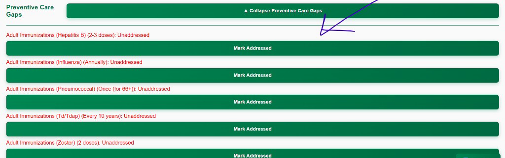
20-preventive-gaps.png10. Appointments
Manage Appointments: book and change visits. View Schedule Calendar: calendar view. Copy SMS: copy reminder text for your phone.
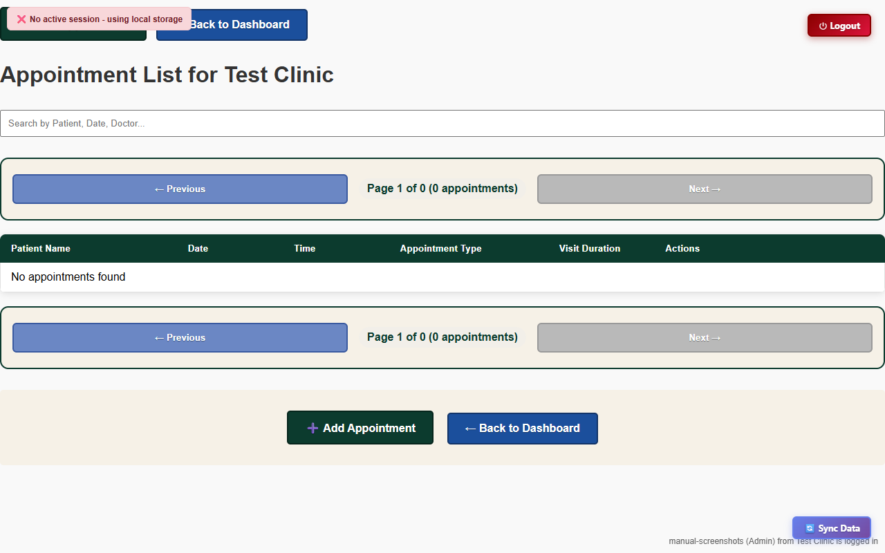
06-appointments.png11. Billing and payments
Quick Checkout is fastest for walk-in patients who pay now:
- Billing & Payments → Quick Checkout
- Select patient → add services → pay (cash or mobile money) → print receipt
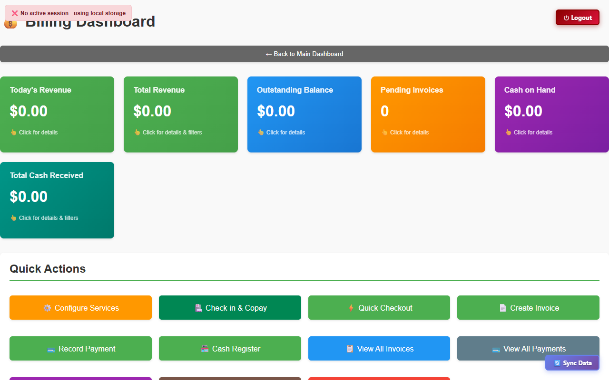
07-billing.png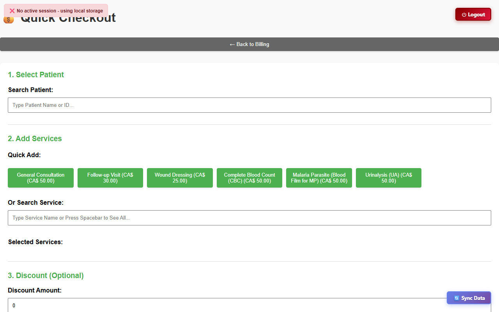
08-quick-checkout.pngMore detail: Billing system guide (invoices, void payments, cash register, reports).
11a. Ontario provincial tools (when enabled)
These pages prepare your clinic for Ontario connectivity. Live provincial pipes still need partner credentials.
- Patient chart: OHIP PHN line, CPP Summary, FHIR export, HL7 ADT export, critical lab banner, ConnectingOntario/SMART launch stubs, and Consents buttons on the patient record.
- OHIP claims: Claims Queue (rejection guidance), Remittance Reconcile, MCEDT Settings from the billing dashboard.
- Lab network (OLIS-ready): External Lab Orders (HL7/FHIR export), Lab Results Queue (paste ORU results).
- Imaging (DIR-ready): External Imaging Orders, Imaging Results Queue (DICOMweb links on chart).
- e-Prescribing (PrescribeIT-ready): Pharmacy picker on the prescription form and eRx Queue for provincial transmit, cancel, renewal, and dispense feedback. Enable PrescribeIT e-Prescribing consent on the patient chart first.
- PHN registry: Patient Identifiers lists provincial health numbers for matching.
- Technical staff: Interoperability Dashboard for HL7/FHIR tests, MLLP simulate, and integration failure audit.
- Diligence: Evidence Binder and Ontario Readiness Report.
12. Messages
Dashboard → Messages for internal notes and tasks between staff.
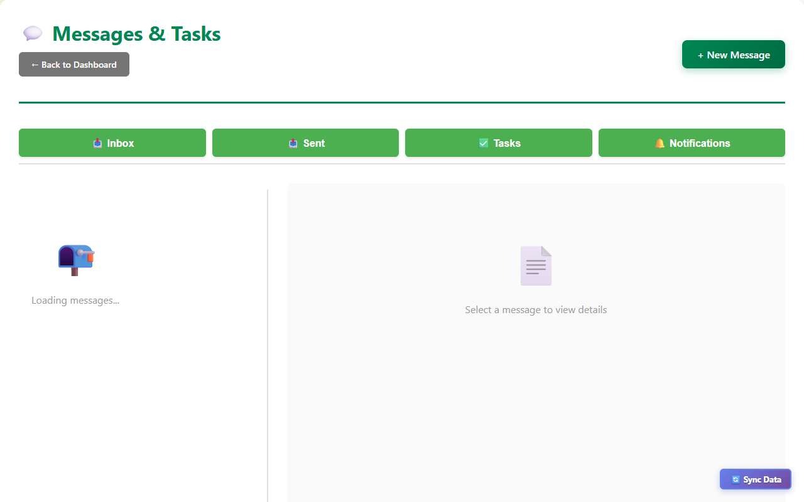
09-messages.png13. Patient portal
Administrators: Setup Patient Portal on the dashboard. Follow the steps to let patients log in to their own records.
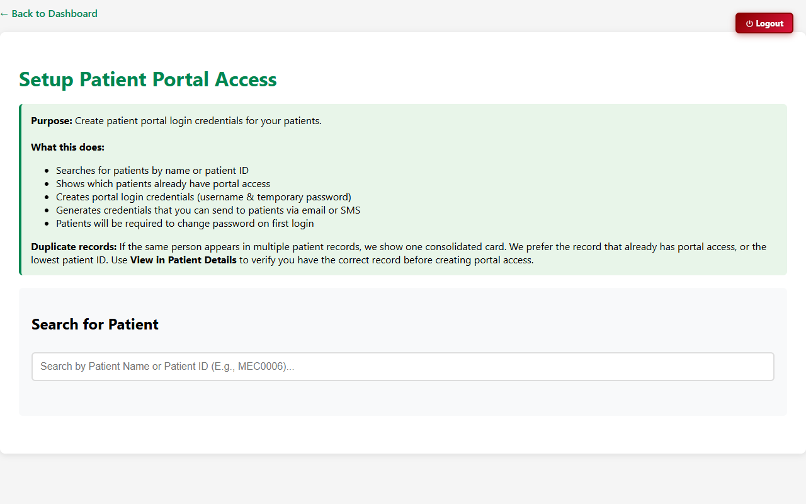
10-patient-portal.png14. Role dashboards
| If you are… | Use this button |
|---|---|
| Pharmacist | Pharmacy Dashboard |
| Lab scientist | Lab Scientist Dashboard |
| Biller / accountant | Biller/Accountant Dashboard |
| Doctor (lab results) | Lab Results Dashboard |
15. In-patient (hospitals)
- Admin turns In-Patient Services on from the dashboard.
- Configure rooms and beds.
- Admit from clinical note; assign beds from Admissions Dashboard.
16. Working without internet
Log in and open the pages you need while online. When the connection drops, you can often keep documenting; changes sync when you’re back online.
17. Administrators
- User Management: add staff, set roles
- Configure Clinic Schedule: hours and slots
- View Audit Log: who changed what
- Security Dashboard: security events
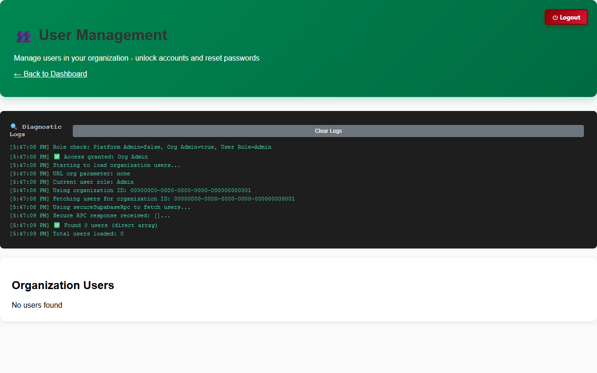
12-org-users.pngPlatform owner (all clinics)
Not for clinic staff. Log in at /platform-login. See Platform admin guide.
18. When something goes wrong
| Problem | What to do |
|---|---|
| Can’t log in | Check username/password; ask your admin |
| Locked during registration | Account locked guide |
| ICD search shows no results | Wait a few seconds for codes to load; type at least 2 letters (e.g. diabetes) |
| Medication not in list (add patient) | Type the name → click Not in list? Use my typed medication name |
| Prescription drug not in list | Try generic name; wait for formulary to load; check spelling |
| Preventive gap buttons don’t work | Unlock the clinical note if it is locked; refresh the page |
| Intake link doesn’t load clinic name | Ask admin to check intake link; database must be up to date |
| Changes not saving | Check internet; refresh when online |
| Wrong payment recorded | Billing → View all payments → Void (with reason) |
19. More guides
Support: support@eworkchop.com